Xilinx FPGA ddr3 MIG 控制器
FPGA DDR3控制器
前言
由于DDR3速度高、吞吐量大、双边沿、命令复杂、从命令到数据延时时间长以及刷新、预充电等诸多内容，因此DDR3使用比较复杂。 鉴于此，在当前的FPGA与DDR3的应用中将DDR3物理层读写（DDR3控制器）与应用层分开，使得物理层控制器有专门的人或单位（如Xilinx，Intel等）维护，用户只关心应用层与控制器之间的读写，而不需要直接与底层的DDR3信号打交道，这样就简化了用户使用DDR3的难度，如图 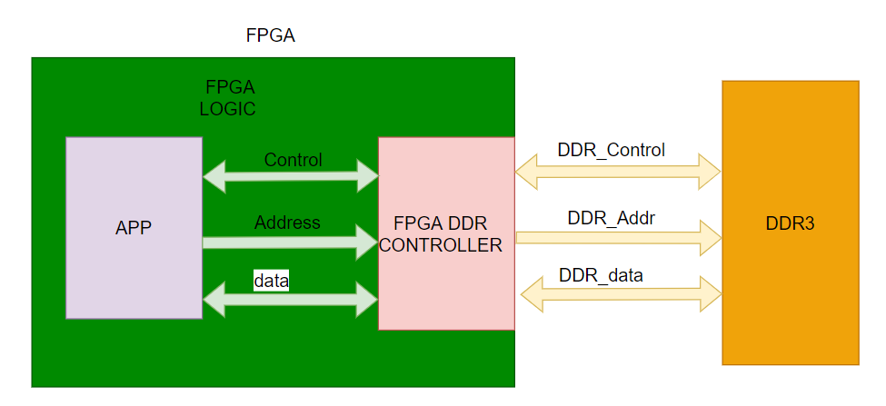
从上图，可以看出FPGA DDR CONTROLLER起到隔离APP与DDR3接口的作用，同时又是FPGA APP与DDR3沟通的桥梁。从APP的角度看，APP 利用 Control、Address、data等总线所访问的就是DDR3本身，而并不知道DDR控制器的存在，所以DDR控制器起到了翻译、解释和桥梁的作用，如图所示 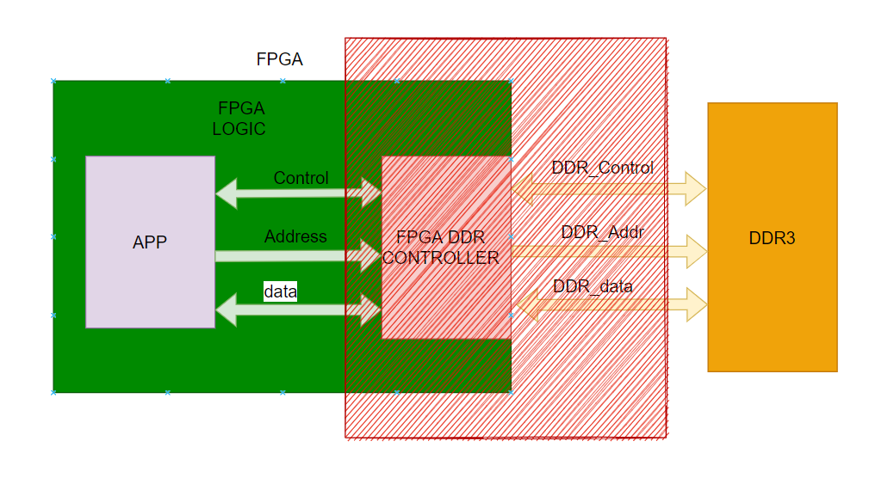
首先建立一个空的工程
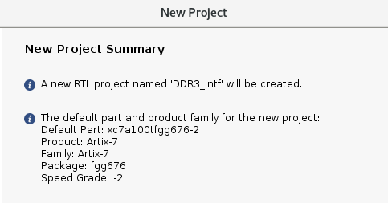
打开IP catalog 窗口 ，双击IP Catalog 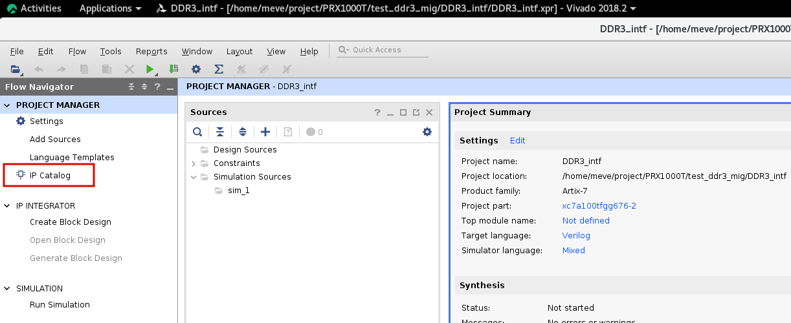
选择DDR控制器IPcore 在IP Catalog 对话框中找到 Memories& Storage Elements–>Memory Interface Generator–>Memory Interface Generator(MIG 7 Series) 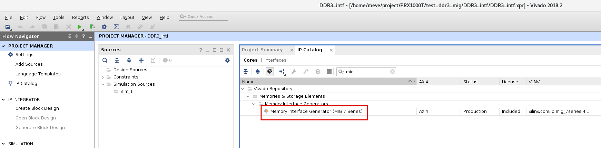
点击 Next，在新界面中对MIG（Memory Interface Generator)及项目中使用的器件（FPGA），软件工具，开发语言（Verilog）进行了描述，如图所示。 点击Next 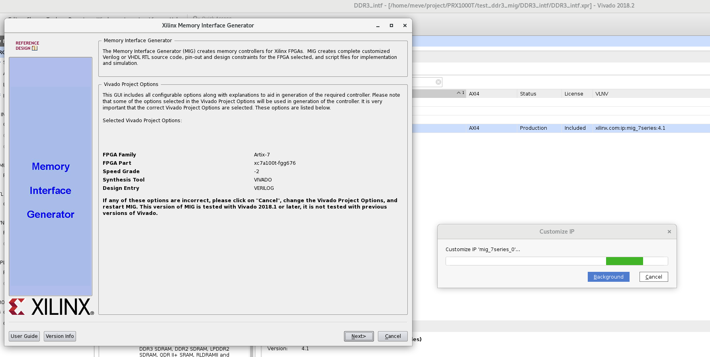
MIG（Memory Interface Generator) 新界面如图 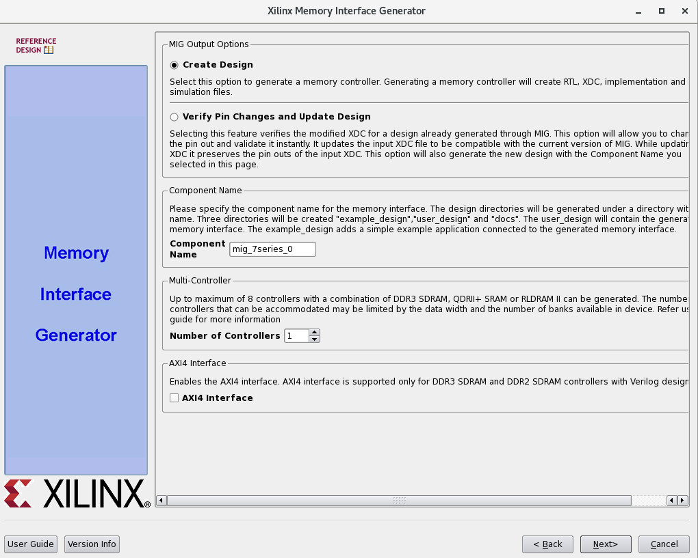
选项意思如下：
MIG Output Option
Create Design
该选项包含生成RTL，XDC， implementation 及simulation文件，可以用来仿真测试，也可以作为整个工程的一个部件。其中XDC仅仅针对DDR控制器的约束文件。
Verify Pin Changes and Update Design
该选项针对以前已经生成的DDR控制器，由于管脚的更改等因素需要重新验证。该选项也会重新生成新的DDR控制器。
Component Name
DDR控制器组件的名称，将mig_7 series_0修改成DDR3_INTF，将在工程目录内创建DDR_INT的子目录，并在该目录下生成”example_design”,”user_design”与”docs”等目录及文件。
user_design文件包含了生成的DDR控制器的接口。该接口包含两个部分，（1）与DDR3 芯片的接口（2）控制器与APP的接口。如图1所示。
example_design 除了包含接口外还添加了一个简单的应用案例，可用来学习或模仿如何使用新生成的控制器。
docs 包含了控制器的说明文档。
Multi-Controller
可以选择一个也可以选择多个（最多可以8个），根据硬件电路决定。本例选择一个。
AXI4 Interface
AXI接口,如果熟悉AXI接口或与该控制器对接的部件使用AXI接口，则选择AXI接口。如果不选AXI则使用传统的控制接口。本例测试不采用AXI接口，因此不选AXI接口。后续有专门的文章介绍AXI总线的使用。
下一步
管脚兼容性FPGA器件选择
DDR控制器生成器向导可以根据工程选择的器件推断出在同样封装的器件家族中还有哪些器件可以与工程中使用的器件管脚兼容，如果选择兼容的器件，将来该控制器可在其它兼容器件上使用，如图所示。点击Next.
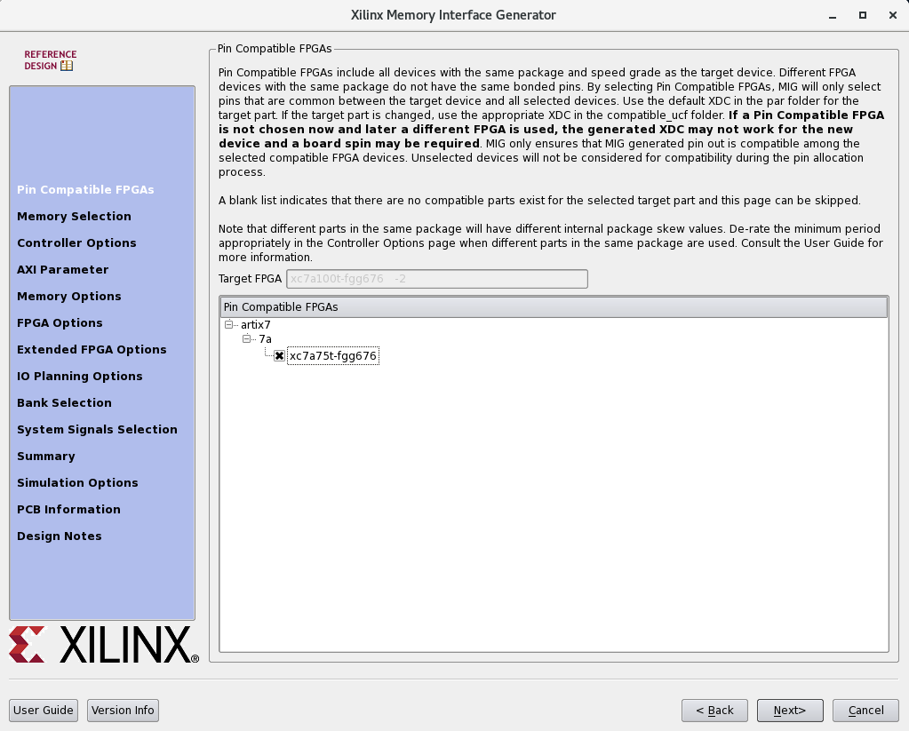
下一步
DDR 器件选择 如图，xc7a100tfgg676-2器件支持DDR3，DDR2以及LPDDR2。本例选择DDR3 SDRAM。 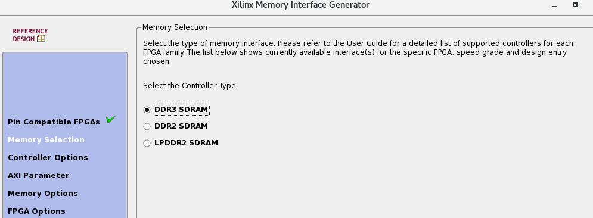 DDR3L 与LPDDR3器件虽然不能被ARTIX系列器件支持，但其它7系列器件可以支持，如Kintex 系列FPGA器件。 DDR3L :低电压系列，接口电压1.35V。 LPDDR3:是一种用在移动设备上的功耗更低，体积更小的器件，电压1.2V。
下一步
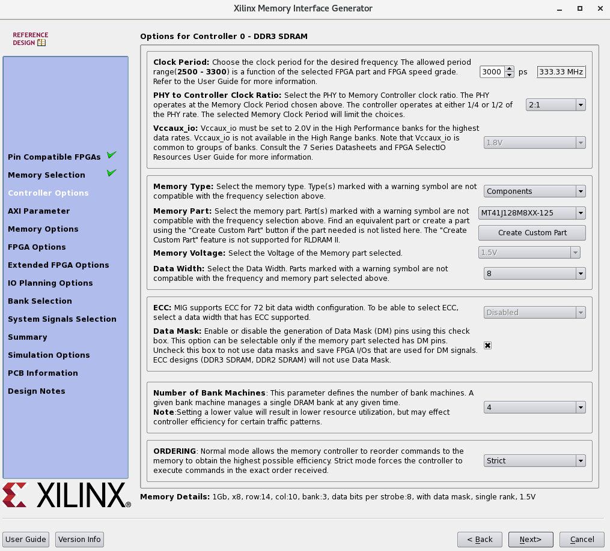
Clock Period 输入时钟周改为2500PS（400MHz），对于ARTIX系列最高可以为400HZ，但是向下兼容。
控制器与PHY（物理层）的时钟比例4：1，是指FPGA提供给DDR3的时钟频率与控制器时钟频率的比率。这个比率只能选择4：1或2：1。这个选择对于控制器与APP接口数据宽度有很大的关系，如图2，图3所示。3000
VCCAUX的电压设为1.8V，对于Kintex系列，如果FPGA使用HP BANK（如BANK32，BANK33等），VCCAUX设为2.0V 可以提高控制器的读写性能，如可以设置CK时钟为800M或更高。
Memory的类型选择DDR3芯片（ Components）或内存条RDIMMS，LRDIMMS，UDIMMS，SODIMMS等。这里选择芯片（component）。并在下拉框中选择合适的器件，如果找不到对应的器件，则需要创建一个新器件。
DDR3电压1.5V，如果使用DDR2应为1.8V。
ECC （disable），只有72数据口线宽度才支持ECC，其中数据64位，ECC为8位。
Data Mask, 是否产生DDR3 DM 控制脚。如果不用DM，可以节省FPGA的管脚。
BANK Mechine数量， 选择 -4或选择-8等，选择范围2–8。数量越大，耗费FPGA资源越多，但效率越高。主要的原因是在连续读写时，在对一个DDR3 bank读写时可以同时打开其它的DDR3 bank，可以节省由于BANK切换时的预充电（Precharge ）及激活（Activating)时间。
ORDERING 命令执行顺序 有Normal和Strict 两种。Strick严格按照给定的顺序执行。Normal模式下，DDR控制器可以重新调整执行顺序以达到更高的读写效率。
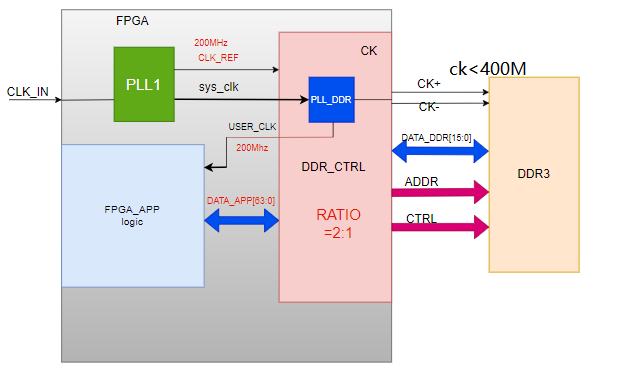 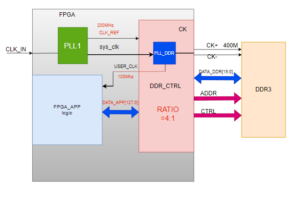
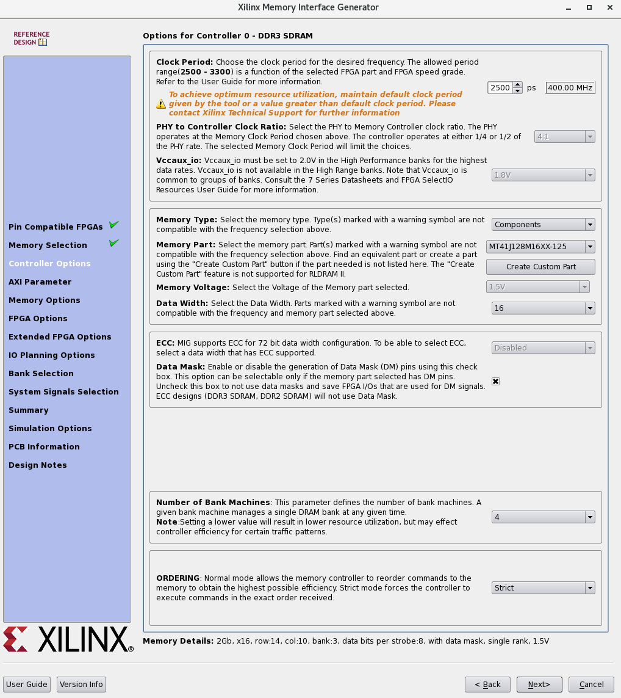
DDR控制器其它参数设置
输入频率，设置合适的输入频率，这里使用100MHz.
突发类型（Burst Type）:选择Sequential
输出强度（ODI）:可以选择RZQ/6 （40欧姆）或RZQ/7（34欧姆）。
片选（CS#）: 在多个RANK时使用CS#，选择Enable。单个RANK时可以选择Disable,可以节省FPGA管脚。
RTT（ODT）,选择RZQ/4（60欧姆）或RZQ/6（40欧姆）。
地址映射顺序，选择ROW+BANK+COLLUM
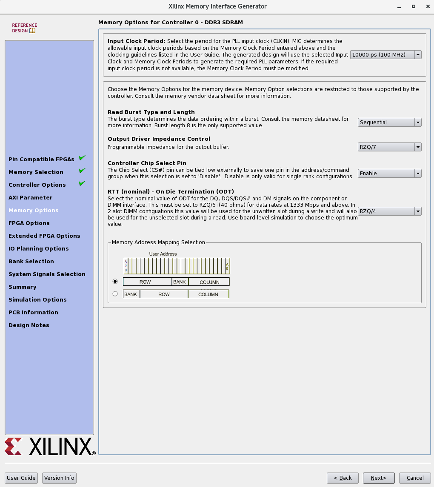
点击Next
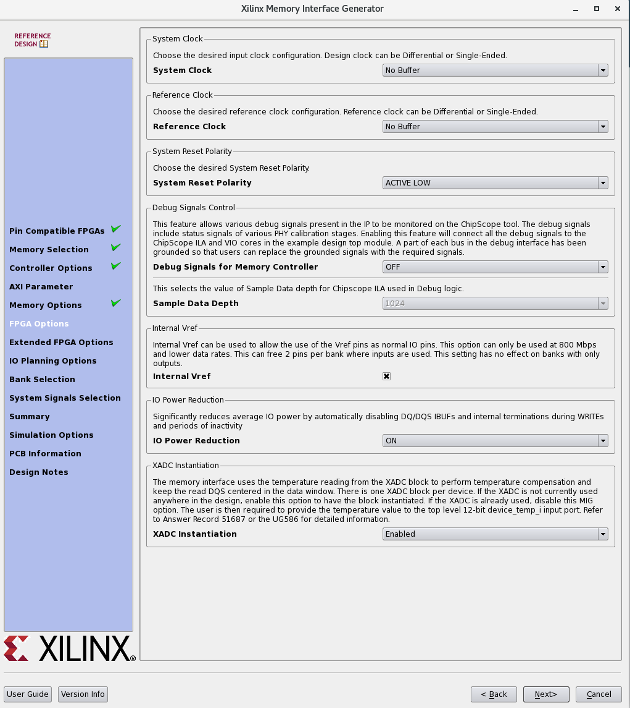
如图设置如下：
System Clock: DDR 控制器输入时钟设置，可以外接到FPGA管脚的输入时钟，此时可以选择差分（Differential ）, 单端（Single End）。如果选择FPGA内部PLL的输出作为DDR控制器的输入管脚，此时应该选择No Buffer，因为PLL的输出已经有全局时钟驱动。
参考时钟（Reference Clock），该时钟主要用来调整与DDR相连的FPGA管脚的输入模块延时的矫正，一般为200MHz，细节可以参考FPGA输入延时相关的文章。由于参考时钟也是 来自FPGA内部PLL，因此选择No Buffer。
复位脚极性，根据DDR3资料，DDR3的复位脚低电平有效，因此选择Active Low。
调试选项，这里选择OFF。
内部参考电压（Internal Ref），这个选项是指FPGA对应BANK参考电压选项，可以使用内部的参考电压生成器，也可以使用外部参考电压。当DDR时钟超过400MHz，一定要选择外部提供的参考时钟，以降低参考时钟的噪声。本例恰好400Mhz，因此选择内部参考时钟。
O功耗降低，选择该项为“ON”可以IO的功耗。就是在非读期间关闭DQ/DQS的输入Buffer，以及FPGA端的终端匹配电阻（RTT）。
XADC, FPGA 内部的ADC，可以使能或非使能。
下一步Next
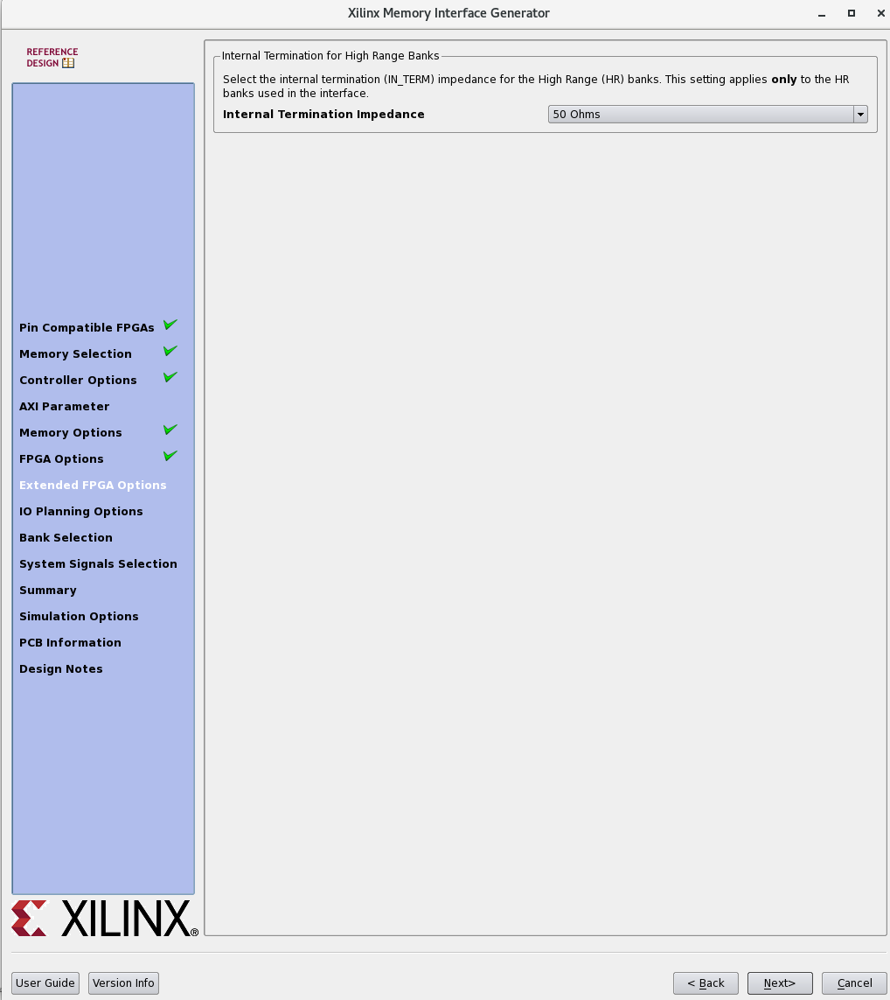
下一步Next
对照硬件连接分配引脚，出现错误
ERROR : Address ports can be allocated to non memory byte group pins (not in T0, T1, T2, or T3) if and only if its adjacent byte is non Data byte group (i.e either Address/Control or empty) and it should contain at least one unallocated pin or allocated with memory clock pair. Refer to UG586 and AR# 45588 for more information.
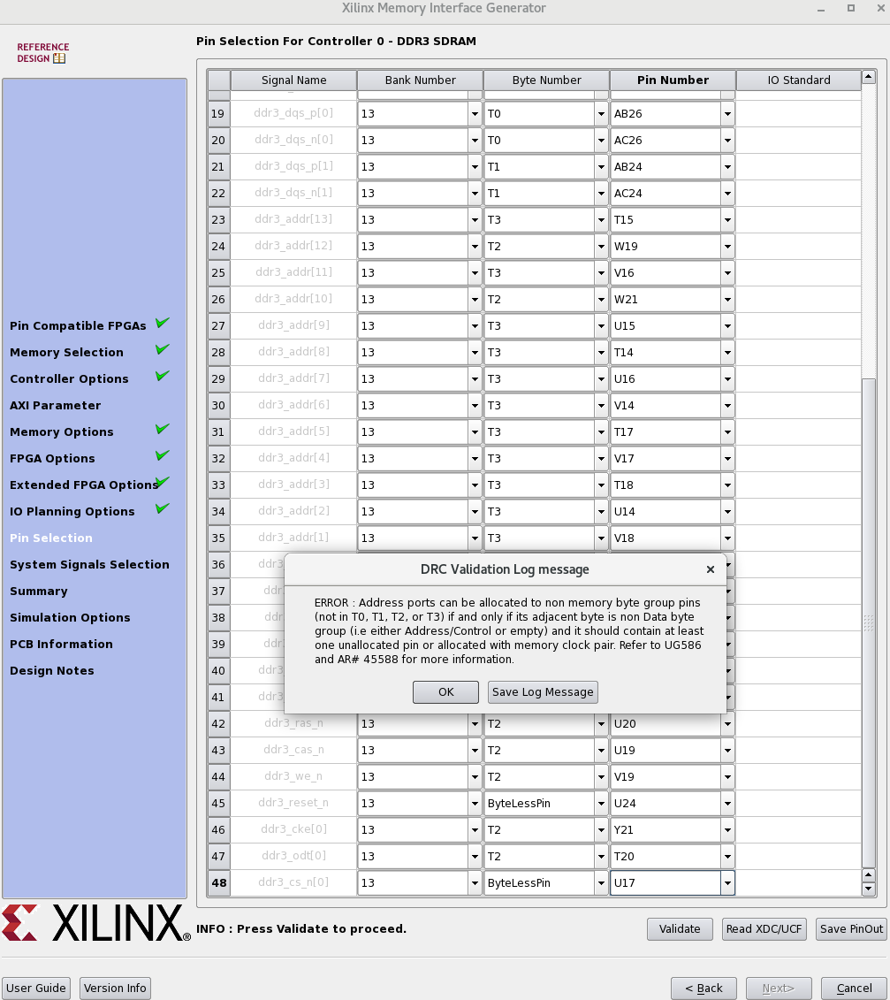
不确定是不是此开发板DDR3的设计错误
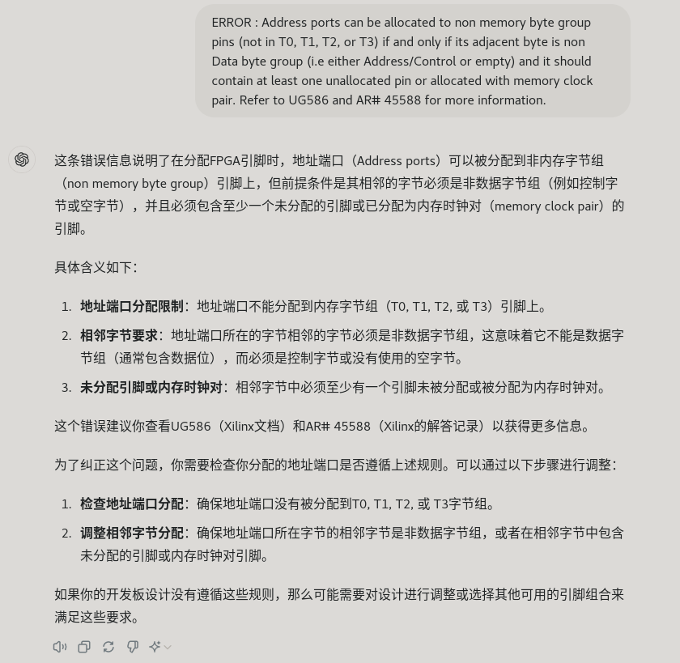
先采用新设计创建IP，再将IO Ports改为硬件对应连接，Implementation出现Implementation Complete，Failed Nets!
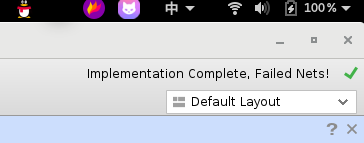
暂时还没能解决 [07_11_2024]